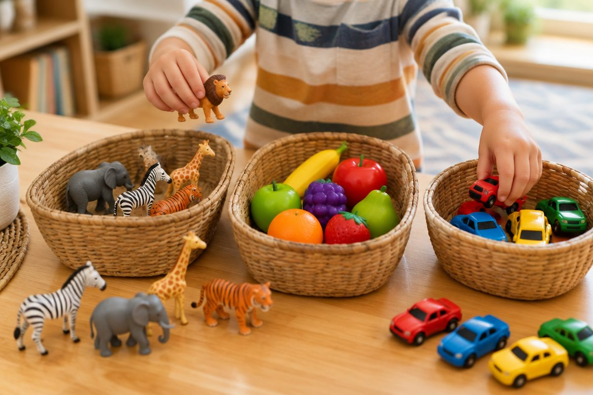

전체 단원 › 1학년 1학기 › 국어 › 2단계 · 낱말 읽기(동물·과일·탈것)
동물, 과일, 탈것 이름을 읽어 볼까?

우리 주변의 모든 것에는 이름이 있어요. 그림을 보고 낱말을 소리 내어 읽어요.
동물 이름을 읽어요
강아지, 고양이를 읽어요.
한 글자씩 천천히 읽어요.
그다음 이어서 한 번 더 읽어요.
강-아-지 → 강아지
과일 이름을 읽어요
딸기, 수박에는 받침이 있어요.
받침 소리를 또박또박 내요.
바나나, 포도, 딸기, 수박
탈것 이름을 읽어요
버스와 기차는 사람을 태워요.
비행기는 하늘을 날아요.
자동차, 자전거, 비행기
같은 무리끼리 모아요
동물, 과일, 탈것으로 나눠요.
무리 지으면 더 잘 기억해요.
동물: 곰, 사자 / 과일: 사과, 포도 / 탈것: 버스, 기차
핵심 낱말
- 낱말
- 뜻이 있는 말 한 덩어리
- 동물
- 움직이며 사는 생물(강아지, 사자 등)
- 과일
- 나무나 풀에 열리는 먹는 열매
- 탈것
- 사람이나 짐을 태우고 움직이는 것
꼭 알아야 할 표현
| 강아지 | 🐶 멍멍 짖는 어린 개 | |
| 고양이 | 🐱 야옹 우는 동물 | |
| 토끼 | 🐰 귀가 긴 동물 | |
| 사자 | 🦁 어흥 하는 동물 | |
| 사과 | 🍎 빨간 과일 | |
| 바나나 | 🍌 노랗고 긴 과일 | |
| 딸기 | 🍓 빨갛고 작은 과일 | |
| 수박 | 🍉 크고 둥근 여름 과일 | |
| 자동차 | 🚗 길을 달리는 탈것 | |
| 버스 | 🚌 많은 사람이 타는 탈것 | |
| 자전거 | 🚲 발로 굴려 타는 탈것 | |
| 비행기 | ✈️ 하늘을 나는 탈것 |
한 줄 정리
- 낱말은 한 글자씩 읽고, 다시 이어서 읽어요.
- 받침이 있는 글자는 받침 소리를 또박또박 내요.
- 동물, 과일, 탈것처럼 무리 지어 기억해요.
학교 교육과정 연결
- [2국02-01] 글자, 단어, 문장, 짧은 글을 정확하게 소리 내어 읽는다.